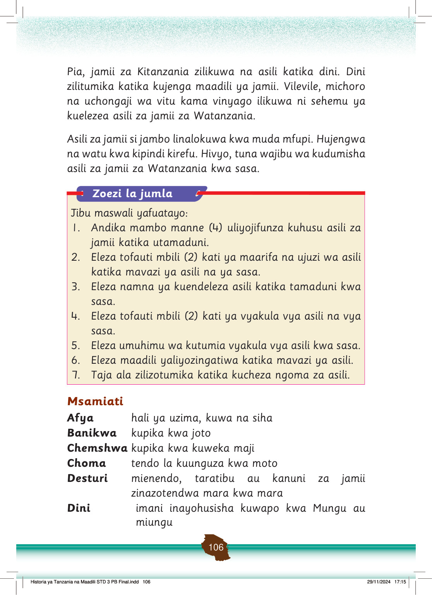

Pia, jamii za Kitanzania zilikuwa na asili katika dini.
Dini zilitumika katika kujenga maadili ya jamii.
Vilevile, michoro na uchongaji wa vitu kama vinyago ilikuwa ni sehemu ya kuelezea asili za jamii za Watanzania.
Asili za jamii si jambo linalokuwa kwa muda mfupi.
Hujengwa na watu kwa kipindi kirefu.
Hivyo, tuna wajibu wa kudumisha asili za jamii za Watanzania kwa sasa.
Zoezi la jumla
Jibu maswali yafuatayo:
1.
Andika mambo manne (4) uliyojifunza kuhusu asili za jamii katika utamaduni.
2.
Eleza tofauti mbili (2) kati ya maarifa na ujuzi wa asili katika mavazi ya asili na ya sasa.
3.
Eleza namna ya kuendeleza asili katika tamaduni kwa sasa.
4.
Eleza tofauti mbili (2) kati ya vyakula vya asili na vya sasa.
5.
Eleza umuhimu wa kutumia vyakula vya asili kwa sasa.
6.
Eleza maadili yaliyozingatiwa katika mavazi ya asili.
7.
Taja ala zilizotumika katika kucheza ngoma za asili.
Msamiati
Afya
hali ya uzima, kuwa na siha
Banikwa
kupika kwa joto
Chemshwa
kupika kwa kuweka maji
Choma
tendo la kuunguza kwa moto
Desturi
mienendo, taratibu au kanuni za jamii zinazotendwa mara kwa mara
Dini
imani inayohusisha kuwapo kwa Mungu au miungu
FOR ONLINE READING ONLY
Historia ya Tanzania na Maadili STD 3 PB Final.indd 106
29/11/2024 17:15